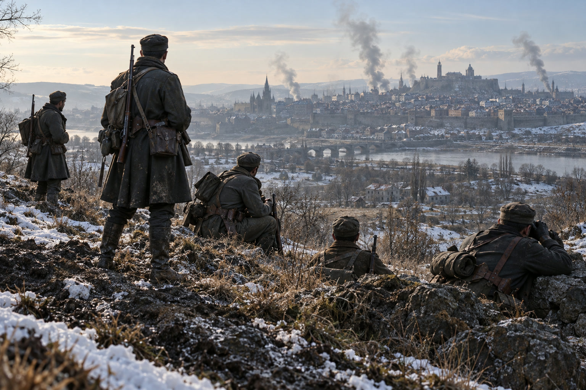

泰平が帝都圏を制圧、人口100万を超す
黒潮の損害は20万人を突破、南の海には新たな火種
発行を見合わせた三期の動きを総点検 初春を迎えても戦線の消耗は続く

【総合部】本紙は第151期から第153期の発行を見合わせた。本号では、その間の動きを第154期の情勢とあわせて振り返る。季節は冬から初春へ移ったが、諸島の戦線では決着のつかないまま損害が重なった。
最も大きく動いたのは、セントラ大陸東部の泰平天国である。泰平はこの三期で、長く攻めあぐねていた帝都アルガリストの周辺をほぼ制圧した。旧帝都の村、隣接の町、兵站基地、炭坑を次々と占領し、アルガリスト帝国は都を近くの別の地点へ移してかろうじて命脈を保っている。泰平の人口はこの間に100万人を超え、領土も広がり続けた。詳報は4面。
北西岸のアカピ大陸では、カペレナ王国と黒潮自治国の長い戦いが、ついに黒潮の累計損害20万人という大台に乗った。黒潮の人口は1万6,600人まで細り、国の存続そのものが問われる水準に達している。カペレナ政府は「敵残党の苛烈な反撃を受けるも王国軍前進」と戦果を誇示した。詳報は3面。
南の海に、新たな火種
セントラ大陸南岸では、国境条約の行方に新たな不安が生じた。狐っ娘の尻尾教団がオリョルッル王国へ譲る予定だった一区画が、王国自身の艦砲射撃で海に沈んだ。王国が条約の無効を唱え、教団領と認めた南部の土地を再び求めて武力に訴える事態が懸念される。王国がそうした方針を示したとの情報はない。詳報は2面。